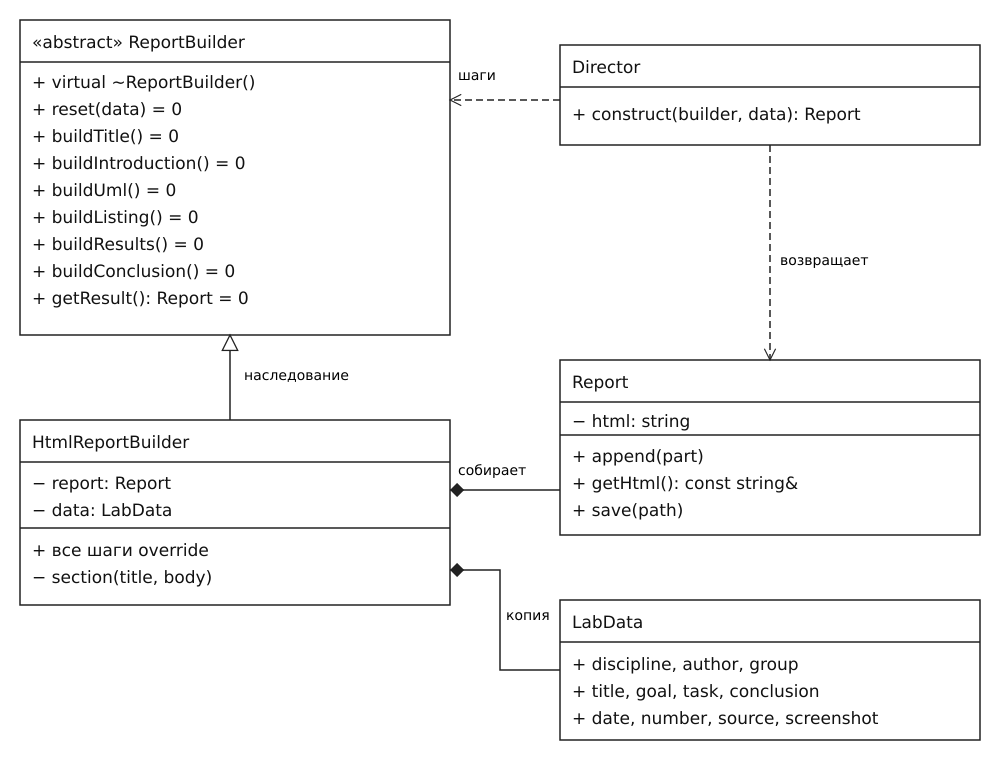
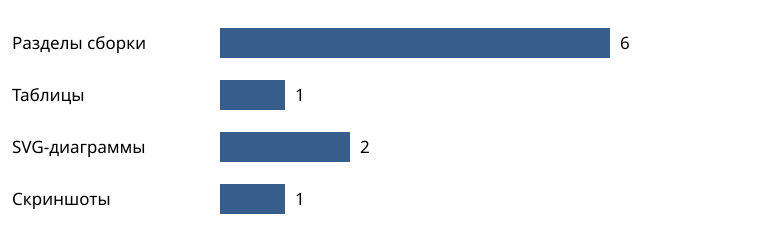
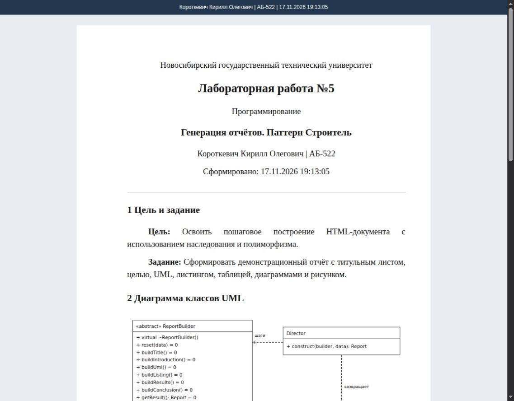

Новосибирский государственный технический университет
Лабораторная работа №5
Программирование
Генерация отчётов. Паттерн Строитель
Короткевич Кирилл Олегович | АБ-522
Сформировано: 17.11.2026 19:14:14
1 Цель и задание
Цель: Освоить пошаговое построение HTML-документа с использованием наследования и полиморфизма.
Задание: Сформировать демонстрационный отчёт с титульным листом, целью, UML, листингом, таблицей, диаграммами и рисунком.
2 Диаграмма классов UML

3 Листинг программы
Исходный код программы
#include <algorithm>
#include <chrono>
#include <ctime>
#include <filesystem>
#include <fstream>
#include <iomanip>
#include <iostream>
#include <memory>
#include <sstream>
#include <stdexcept>
#include <string>
#include <vector>
using namespace std;
namespace fs = filesystem;
// Исходные данные. Одни и те же поля используются для трёх дисциплин.
struct LabData {
string discipline, author, group, title, goal, task, conclusion, date;
int number = 5;
string source;
fs::path screenshot;
};
string escapeHtml(const string& text) {
string result;
for (char c : text) {
switch (c) {
case '&': result += "&"; break;
case '<': result += "<"; break;
case '>': result += ">"; break;
case '"': result += """; break;
case '\'': result += "'"; break;
default: result += c;
}
}
return result;
}
string readFile(const fs::path& path) {
ifstream file(path, ios::binary);
if (!file) throw runtime_error("Не удалось открыть файл: " + path.string());
string text((istreambuf_iterator<char>(file)), istreambuf_iterator<char>());
if (file.bad()) throw runtime_error("Ошибка чтения: " + path.string());
return text;
}
void writeFile(const fs::path& path, const string& text) {
ofstream file(path, ios::binary);
if (!file) throw runtime_error("Не удалось создать файл: " + path.string());
file << text;
file.close();
if (!file) throw runtime_error("Ошибка записи: " + path.string());
}
string currentDate() {
time_t now = chrono::system_clock::to_time_t(chrono::system_clock::now());
tm value = *localtime(&now);
ostringstream out;
out << put_time(&value, "%d.%m.%Y %H:%M:%S");
return out.str();
}
// Продукт: готовый документ. Данные закрыты от прямого изменения извне.
class Report {
string html;
public:
void append(const string& part) { html += part; }
const string& getHtml() const { return html; }
void save(const fs::path& path) const { writeFile(path, html); }
};
// Абстрактный строитель задаёт шаги построения, но не формат документа.
class ReportBuilder {
public:
virtual ~ReportBuilder() = default;
virtual void reset(const LabData& data) = 0;
virtual void buildTitle() = 0;
virtual void buildIntroduction() = 0;
virtual void buildUml() = 0;
virtual void buildListing() = 0;
virtual void buildResults() = 0;
virtual void buildConclusion() = 0;
virtual Report getResult() const = 0;
};
// Конкретный строитель создаёт HTML. Другой формат можно добавить наследником.
class HtmlReportBuilder : public ReportBuilder {
Report report;
LabData data;
void section(const string& title, const string& body) {
report.append("<section><h2>" + title + "</h2>" + body + "</section>\n");
}
public:
void reset(const LabData& value) override {
data = value;
report = Report(); // Повторная сборка не накапливает старые разделы.
}
void buildTitle() override {
report.append("<!DOCTYPE html>\n<html lang=\"ru\"><head><meta charset=\"UTF-8\">"
"<meta name=\"viewport\" content=\"width=device-width, initial-scale=1\">"
"<title>ЛР №" + to_string(data.number) + " — " + escapeHtml(data.discipline) + "</title>"
"<style>.identity{position:sticky;top:0;background:#22374d;color:white;padding:8px 16px;font:12px/1.4 sans-serif;z-index:2;text-align:center}@media print{.identity{display:none}}body{margin:0;background:#e9edf2;color:#171717;font:14pt/1.5 'Times New Roman',serif}"
"main{box-sizing:border-box;max-width:210mm;margin:24px auto;padding:20mm 15mm 20mm 30mm;background:white}"
"p{text-align:justify;text-indent:1.25cm;margin:0 0 12px}h1{font-size:20pt}h2{font-size:16pt}"
"header{text-align:center;border-bottom:1px solid #bbb;padding-bottom:20px}header p{text-align:center;text-indent:0}"
"table{width:100%;border-collapse:collapse;font-size:12pt}th,td{border:1px solid #777;padding:8px;text-align:justify}"
"pre{white-space:pre-wrap;overflow-wrap:anywhere;background:#f4f5f7;padding:12px;font:9pt/1.3 monospace}"
"figure{margin:20px 0}figure img{max-width:100%;height:auto}figcaption{text-align:center;font-size:12pt}"
"section{margin-top:24px}@media print{body{background:white}main{margin:0;max-width:none;padding:0}"
"header{break-after:page}h2{break-after:avoid}figure,tr{break-inside:avoid}@page{size:A4;margin:20mm 15mm 20mm 30mm}}"
"@media(max-width:700px){main{margin:0;padding:20px}h1{font-size:18pt}}"
"</style></head><body><aside class=\"identity\">" + escapeHtml(data.author) + " | " + escapeHtml(data.group) + " | " + escapeHtml(data.date) + "</aside><main><header>"
"<p>Новосибирский государственный технический университет</p>"
"<h1>Лабораторная работа №" + to_string(data.number) + "</h1><p>" + escapeHtml(data.discipline) + "</p>"
"<h2>" + escapeHtml(data.title) + "</h2><p>" + escapeHtml(data.author) + " | " + escapeHtml(data.group) + "</p>"
"<p>Сформировано: " + escapeHtml(data.date) + "</p></header>\n");
}
void buildIntroduction() override {
section("1 Цель и задание", "<p><strong>Цель:</strong> " + escapeHtml(data.goal) + "</p>"
"<p><strong>Задание:</strong> " + escapeHtml(data.task) + "</p>");
}
void buildUml() override {
section("2 Диаграмма классов UML", "<figure><img src=\"assets/uml.svg\" alt=\"UML классов генератора отчётов\">"
"<figcaption>Рисунок 1 — Структура паттерна Строитель</figcaption></figure>");
}
void buildListing() override {
section("3 Листинг программы", "<details><summary>Исходный код программы</summary><pre><code>" + escapeHtml(data.source) + "</code></pre></details>");
}
void buildResults() override {
string body = "<p>Документ собран из шести последовательных шагов. Таблица отражает структуру полученного отчёта.</p>"
"<table><caption>Таблица 1 — Элементы отчёта</caption><thead><tr><th>Элемент</th><th>Содержание</th></tr></thead><tbody>";
const vector<vector<string>> rows = {
{"Титульный лист", "Дисциплина, тема, автор, группа и дата"},
{"Цель и задание", "Исходные данные выбранной лабораторной работы"},
{"UML", "Связи классов Builder, Director и Report"},
{"Листинг", "Исходный код из физического файла main.cpp"},
{"Результаты", "Таблица, диаграмма и рисунок при его выборе"},
{"Вывод", "Итог, заданный пользователем"}
};
for (const auto& row : rows)
body += "<tr><td>" + escapeHtml(row[0]) + "</td><td>" + escapeHtml(row[1]) + "</td></tr>";
body += "</tbody></table><figure><img src=\"assets/structure.svg\" alt=\"Состав отчёта\">"
"<figcaption>Рисунок 2 — Количество элементов в структуре отчёта</figcaption></figure>";
if (!data.screenshot.empty())
body += "<figure><img src=\"assets/screenshot" + data.screenshot.extension().string() +
"\" alt=\"Снимок результата работы\"><figcaption>Рисунок 3 — Снимок результата работы</figcaption></figure>";
section("4 Результаты работы", body);
}
void buildConclusion() override {
section("5 Вывод", "<p>" + escapeHtml(data.conclusion) + "</p>");
report.append("</main></body></html>\n");
}
Report getResult() const override { return report; }
};
// Директор знает порядок шагов и работает через ссылку на абстрактный класс.
class Director {
public:
Report construct(ReportBuilder& builder, const LabData& data) const {
builder.reset(data);
builder.buildTitle();
builder.buildIntroduction();
builder.buildUml();
builder.buildListing();
builder.buildResults();
builder.buildConclusion();
return builder.getResult();
}
};
const vector<string> disciplines = {
"Программирование", "Информатика", "Технологии и методы программирования"
};
// Диаграмма строится по фактическому числу элементов текущего документа.
string makeChart(bool hasScreenshot) {
const vector<pair<string, int>> values = {
{"Разделы сборки", 6}, {"Таблицы", 1}, {"SVG-диаграммы", 2}, {"Скриншоты", hasScreenshot ? 1 : 0}
};
string svg = "<svg xmlns=\"http://www.w3.org/2000/svg\" width=\"760\" height=\"240\" viewBox=\"0 0 760 240\">"
"<rect width=\"760\" height=\"240\" fill=\"white\"/><g font-family=\"sans-serif\" font-size=\"17\">";
int y = 28;
for (const auto& value : values) {
svg += "<text x=\"12\" y=\"" + to_string(y + 21) + "\">" + value.first + "</text>"
"<rect x=\"220\" y=\"" + to_string(y) + "\" width=\"" + to_string(value.second * 65) +
"\" height=\"30\" fill=\"#375e8d\"/><text x=\"" + to_string(230 + value.second * 65) +
"\" y=\"" + to_string(y + 21) + "\">" + to_string(value.second) + "</text>";
y += 52;
}
return svg + "</g></svg>";
}
void generate(LabData data, const fs::path& output, const fs::path& assets) {
fs::create_directories(output / "assets");
writeFile(output / "assets/uml.svg", readFile(assets / "uml.svg"));
if (!data.screenshot.empty()) {
string ext = data.screenshot.extension().string();
if (ext != ".png" && ext != ".jpg" && ext != ".jpeg")
throw runtime_error("Для скриншота нужен файл PNG или JPG.");
fs::path target = output / ("assets/screenshot" + ext);
if (fs::weakly_canonical(data.screenshot) != fs::weakly_canonical(target))
fs::copy_file(data.screenshot, target, fs::copy_options::overwrite_existing);
}
writeFile(output / "assets/structure.svg", makeChart(!data.screenshot.empty()));
unique_ptr<ReportBuilder> builder = make_unique<HtmlReportBuilder>();
Director director;
Report report = director.construct(*builder, data);
report.save(output / "report.html");
cout << "Создан отчёт: " << fs::absolute(output / "report.html") << '\n';
}
string ask(const string& prompt) {
cout << prompt;
string answer;
if (!getline(cin, answer)) throw runtime_error("Ввод завершён до заполнения данных.");
return answer;
}
int askNumber(const string& prompt, int low, int high) {
while (true) {
string text = ask(prompt);
istringstream input(text);
int value; char extra;
if ((input >> value) && !(input >> extra) && value >= low && value <= high) return value;
cout << "Введите целое число от " << low << " до " << high << ".\n";
}
}
int main(int argc, char* argv[]) {
try {
cout << "=== Генератор HTML-отчётов | ЛР №5 | Вариант 10 ===\n";
const bool demo = argc >= 2 && string(argv[1]) == "--demo";
if (argc > 3 || (argc >= 2 && !demo)) {
cerr << "Запуск: lab5 [--demo [каталог результатов]]\n";
return 1;
}
fs::path output = argc == 3 ? fs::path(argv[2]) : fs::path("generated");
LabData data;
data.author = "Короткевич Кирилл Олегович";
data.group = "АБ-522";
data.date = currentDate();
data.source = readFile("main.cpp");
if (demo) {
data.title = "Генерация отчётов. Паттерн Строитель";
data.goal = "Освоить пошаговое построение HTML-документа с использованием наследования и полиморфизма.";
data.task = "Сформировать демонстрационный отчёт с титульным листом, целью, UML, листингом, таблицей, диаграммами и рисунком.";
data.conclusion = "Демонстрационный документ сформирован. Директор определяет последовательность шагов, а HTML-строитель — представление разделов.";
if (fs::exists("assets/demo-preview.png")) data.screenshot = "assets/demo-preview.png";
for (size_t i = 0; i < disciplines.size(); ++i) {
data.discipline = disciplines[i];
generate(data, output / ("discipline-" + to_string(i + 1)), "assets");
}
} else {
for (size_t i = 0; i < disciplines.size(); ++i) cout << i + 1 << ". " << disciplines[i] << '\n';
data.discipline = disciplines[askNumber("Дисциплина (1–3): ", 1, 3) - 1];
data.number = askNumber("Номер лабораторной работы (1–99): ", 1, 99);
data.title = ask("Тема работы: ");
data.goal = ask("Цель работы: ");
data.task = ask("Задание: ");
data.conclusion = ask("Вывод: ");
data.screenshot = ask("Путь к скриншоту PNG/JPG (Enter — без рисунка): ");
if (data.title.empty() || data.goal.empty() || data.task.empty() || data.conclusion.empty())
throw runtime_error("Тема, цель, задание и вывод не должны быть пустыми.");
generate(data, output / "custom", "assets");
}
return 0;
} catch (const exception& error) {
cerr << "Ошибка: " << error.what() << '\n';
return 1;
}
}
4 Результаты работы
Документ собран из шести последовательных шагов. Таблица отражает структуру полученного отчёта.
| Элемент | Содержание |
|---|---|
| Титульный лист | Дисциплина, тема, автор, группа и дата |
| Цель и задание | Исходные данные выбранной лабораторной работы |
| UML | Связи классов Builder, Director и Report |
| Листинг | Исходный код из физического файла main.cpp |
| Результаты | Таблица, диаграмма и рисунок при его выборе |
| Вывод | Итог, заданный пользователем |


5 Вывод
Демонстрационный документ сформирован. Директор определяет последовательность шагов, а HTML-строитель — представление разделов.